Get Ready!
Step 1: Set up a project
In Katalon Platform, you can create a new project from scratch on Katalon TestOps and open it in Katalon Studio, or clone a sample project from our GitHub repository: Sample projects.
To learn how to open a project in Katalon Studio, see: Manage test project in Katalon Studio overview.
Step 2: Create the first test case
On the main toolbar, click on Create a new Test Case or right-click on Test Cases > New > Test Case.
Test cases in Katalon Studio can be written in pure Selenium format:
WebDriver driver = new ChromeDriver();
String baseUrl = "https://www.katalon.com/";
driver.manage().timeouts().implicitlyWait(30, TimeUnit.SECONDS);
driver.get("https://katalon-demo-cura.herokuapp.com");
driver.findElement(By.id("btn-make-appointment")).click();
driver.findElement(By.id("txt-username")).clear();
driver.findElement(By.id("txt-username")).sendKeys("John Doe");
driver.findElement(By.id("txt-password")).clear();
driver.findElement(By.id("txt-password")).sendKeys("ThisIsNotAPassword");
driver.findElement(By.id("btn-login")).click();
driver.quit();
Click Run to see how it works.
However, writing test cases, especially in high volume at once, can be time-consuming. The above test case, if written in Katalon Studio standard format, would look like this:
WebUI.openBrowser('https://katalon-demo-cura.herokuapp.com/')
WebUI.click(findTestObject('Page_CURA Healthcare Service/a_Make Appointment'))
WebUI.setText(findTestObject('Page_CURA Healthcare Service/input_Username_username'), 'John Doe')
WebUI.setEncryptedText(findTestObject('Page_CURA Healthcare Service/input_Password_password'), 'g3/DOGG74jC3Flrr3yH+3D/yKbOqqUNM')
WebUI.click(findTestObject('Page_CURA Healthcare Service/button_Login'))
Click Run to see how it works.
The Katalon Studio beginning steps seem relatively self-explanatory. However, you might wonder where the “ChromeDriver” is, what the “click” and “findTestObject” methods are, or how to use the “PageCURA Healthcare Service/aMake Appointment” argument. Let’s go through them together.
Browser drivers such as ChromeDriver in Katalon Studio are abstracted away from the code and set up at the execution time to make code inherently cross-browser-able.
“Click” and “setText” are Katalon Studio open-source built-in keywords that wrap and enhance the limited set of Selenium keywords. You can also define your own set of custom keywords or import the shared custom keywords made by other Katalon Studio users.
“PageCURA Healthcare Service/aMake Appointment” is a test object in Katalon Studio which is designed to follow the Page Object Model pattern. It helps centralize the application elements for easier scripting and maintenance. On top of that, Katalon Studio has developed Self-healing - a feature that makes test objects sustainable, despite the continuous changing nature of the AUT. Ultimately, the above script and objects can be quickly generated by the Recording and Spying features.
You can also use Katalon Studio to perform both manual testing. The tool uniquely provides a dual-script interface for both manual and automated tests:
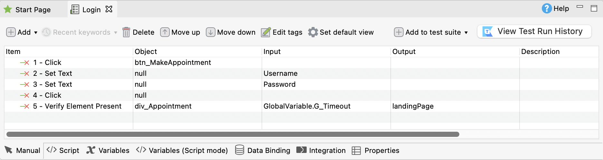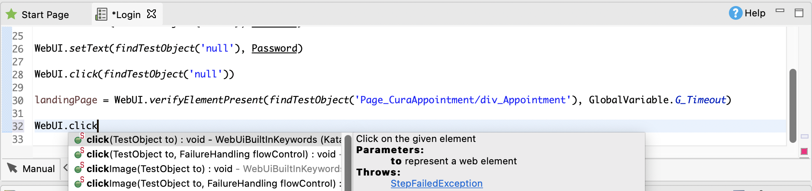
To put into practice, here's how a team of testers and developers can apply these steps to a complete workflow: The automation experts prepare all the scripting work such as custom keywords, test listeners, calling test cases, etc. Then, the manual QAs - who are not familiar with scripting - can utilize all of the prepared materials to build test cases. Eventually, the manual QAs can gradually learn how to script and become automation scripters.
Step 3: Verification in the test case
Next, let’s add verification script to the test case to know whether the login process is successful or not.
From the first test case, we have known the basic of how Katalon Studio script works. Now let’s move further to create a more realistic test case with the “Make Appointment” header verification.
Katalon Studio provides a rich set of verification keywords to easily deal with that requirement. Once again, this kind of script can be done in both manual or script mode.
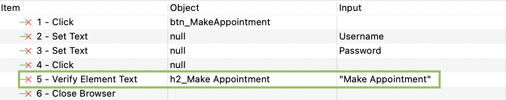
WebUI.verifyElementText(findTestObject('Object Repository/Page_CURA Healthcare Service/h2_Make Appointment'), 'Make Appointment', FailureHandling.STOP_ON_FAILURE)
After that, the execution results can be checked in the Log Viewer. To learn how to view execution logs, see View and customize execution log in Katalon Studio.
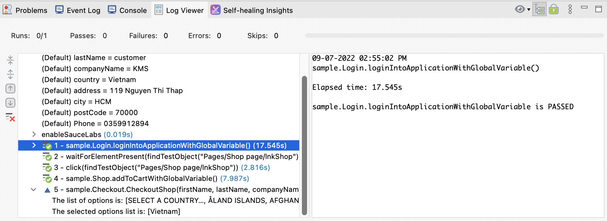
Step 4: Debugging the test case
Let’s intentionally make the test case fail by changing the verification text to “Make another Appointment.” In Katalon Studio, there are several ways to check for the failure reasons.
Option 1: Investigate error logs
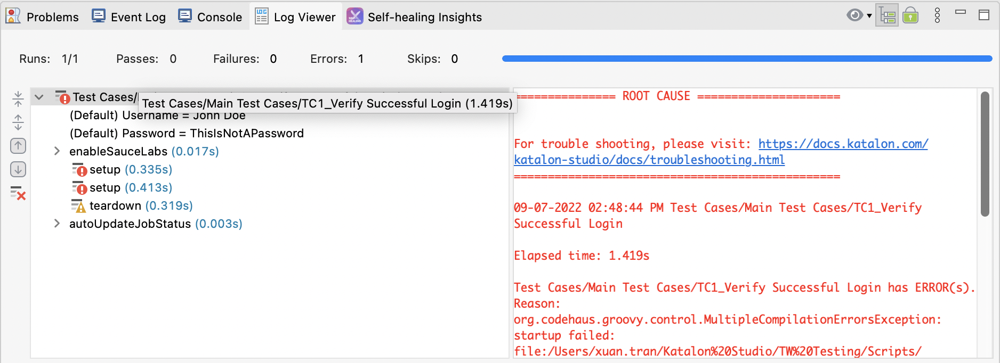
Option 2: Debug mode
To investigate complex scenarios, Katalon Studio provides a debug mechanism which works the same as the code debug mechanism in advanced developer IDE.
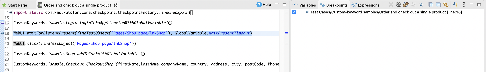
Option 3: Manual debug
The Record feature of Katalon Studio has its own method to debug as well. You can continue to record the failed test case, run the error test step, then investigate and fix the issue directly in the recording mode. See the examples below:
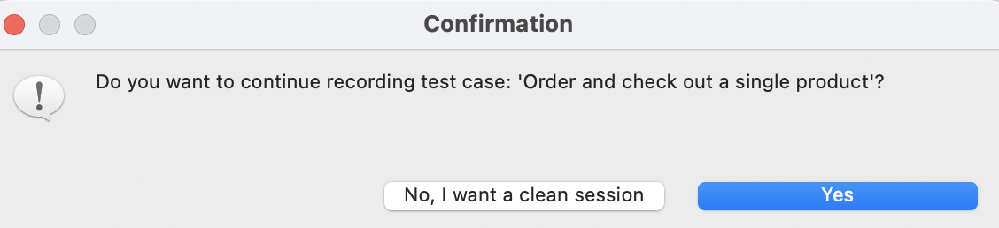
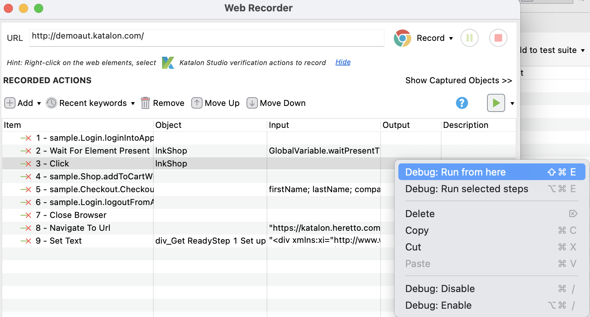
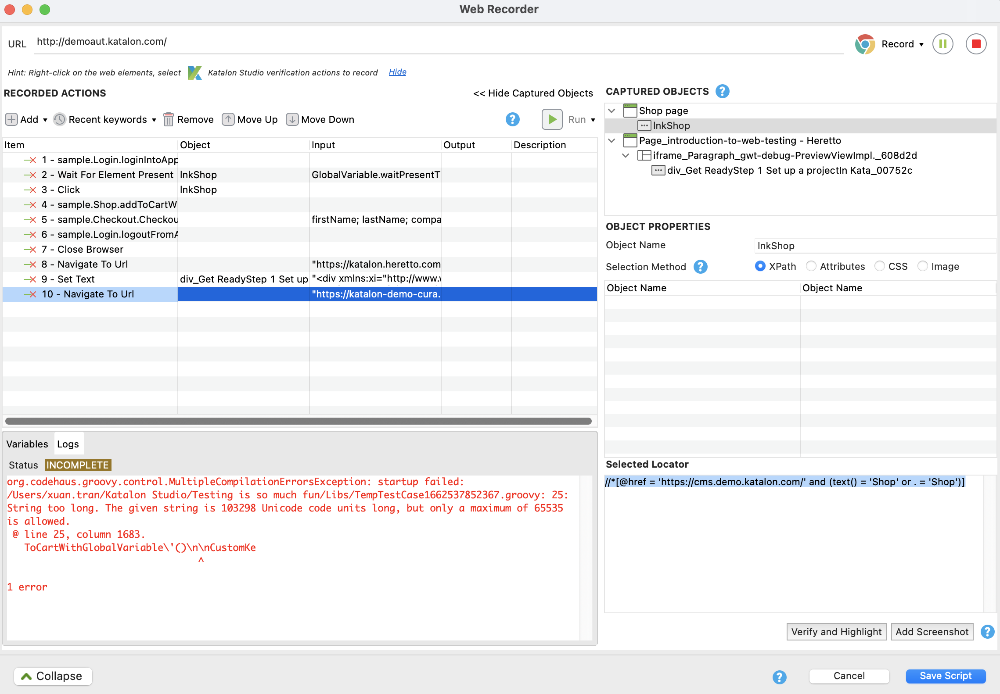
Step 5: Plan the test case in a test suite
Right-click on Test Suites > New > Test Suite.
A test suite is used to plan test cases with several configurations such as: retrying on failure, email sending or data-driven binding. You can manage additional configurations for test suite execution by expanding the Execution Information section, as below:
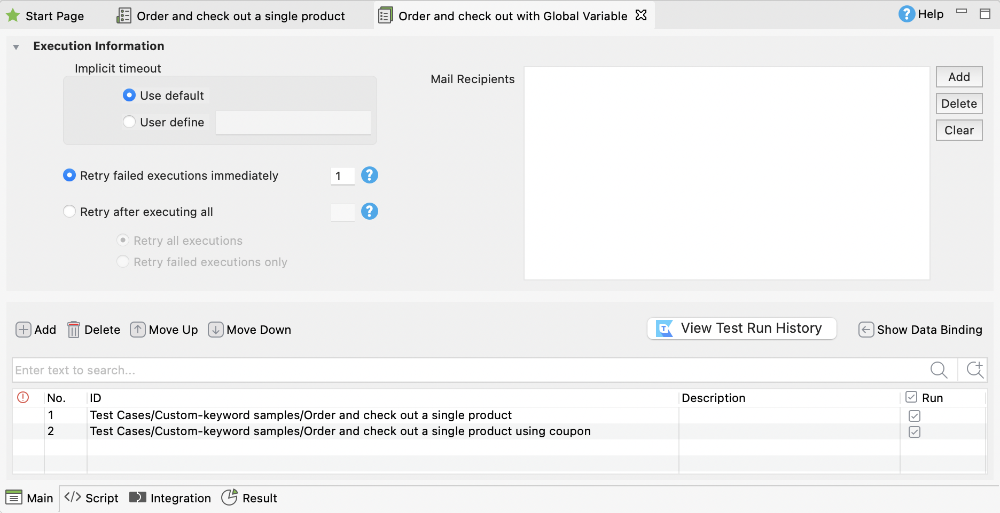
For more details, visit Manage test suites in Katalon Studio.
Step 6: Execute the test suite and view the result
Select the Test Suite and click Run.
The final step is executing the test cases in the designed test suite. Here is how to execute a test case: Once planned, the test suites or test suite collections can be executed not only directly in Katalon Studio, but also by command line. Together with the standard JUnit format of the execution results and pre-built Docker images, these features will give you full flexibility to integrate Katalon Studio into a CI/CD pipeline with tools such as Jenkins or CircleCI.
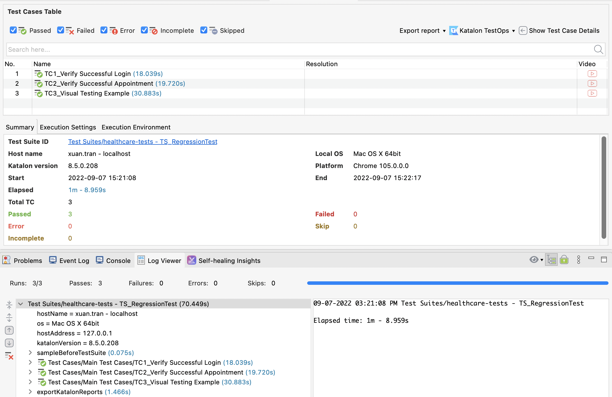